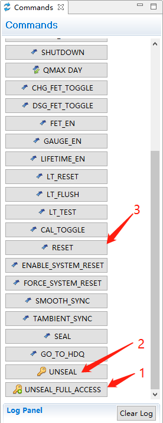
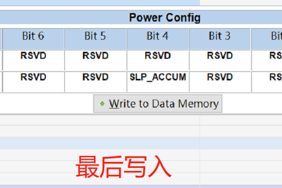
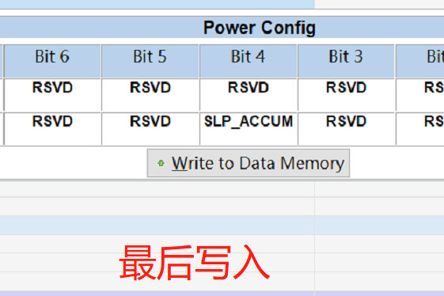

概述
该电量计用在A6650上面。
参考
问题点调试
1.无电量计机器自动关机
查看打印如下：
行 9148: 01-01 00:06:34.072 929 929 I bootstat: Service started: /system/bin/bootstat --set_system_boot_reason
行 9148: 01-01 00:06:34.072 929 929 I bootstat: Service started: /system/bin/bootstat --set_system_boot_reason
行 9149: 01-01 00:06:34.074 929 929 I bootstat: Canonical boot reason: shutdown,battery
行 9150: 01-01 00:06:34.074 929 929 I bootstat: Canonical boot reason: shutdown,battery
行 9157: 01-01 00:06:34.084 929 929 I bootstat: Last reboot reason read from /metadata/bootstat/persist.sys.boot.reason : shutdown,battery. Last reboot reason read from persist.sys.boot.reason : shutdown,battery
行 9157: 01-01 00:06:34.084 929 929 I bootstat: Last reboot reason read from /metadata/bootstat/persist.sys.boot.reason : shutdown,battery. Last reboot reason read from persist.sys.boot.reason : shutdown,battery
行 9158: 01-01 00:06:34.084 929 929 I bootstat: Normalized last reboot reason : shutdown,battery
从上面打印看应该是bootstat应用导致的，发现原因是无电量计注册了battery的psy，上报的present是0，就是不在位，bootstat应用直接关机。
解决方案：
Author: wugn <wugangnan@paxsz.com>
Date: Tue Aug 16 16:10:44 2022 +0800
[Title]:修复无电量计时自动power off关机问题。
[Summary]:
1.原因是上报了电池不在位信息，导致关机。
2.解决方案：无电量计不注册psy设备，不进行上报。
[Test Plan]:
1.电量计时是否自动power off关机。
[Module]: Battery
[Model]: A6650
[author]: wugangnan@paxsz.com
[date]: 2022-8-16
diff --git a/UM.9.15/kernel/msm-4.19/drivers/misc/pax/power/pax_battery_class.c b/UM.9.15/kernel/msm-4.19/drivers/misc/pax/power/pax_battery_class.c
index 58d5fcc0243..fd2c5210870 100755
--- a/UM.9.15/kernel/msm-4.19/drivers/misc/pax/power/pax_battery_class.c
+++ b/UM.9.15/kernel/msm-4.19/drivers/misc/pax/power/pax_battery_class.c
@@ -742,9 +742,14 @@ int pax_battery_register_power_supply(struct device *dev)
pax_battery_sply.BAT_PRESENT = pax_battery_is_bat_exist();
+ if (!pax_battery_sply.BAT_PRESENT) {
+ pr_err("no battery exist, return\n");
+ return -EINVAL;
+ }
+
pax_battery_sply.psy = power_supply_register(dev, &pax_battery_sply.psd, NULL);
if (IS_ERR(pax_battery_sply.psy)) {
2.如何解密IC并reset芯片
如果需要修改某些寄存器或者reset时，首先需要解密，解密操作如下：

3.如何退出自动船运模式
目前电量计都打开了自动进入船运模式功能，如果超过3天不开机，电池就会自动进入船运模式。船运模式的特点是电池无输出，功耗极低，但是能记录lifetime，保障电池在运输过程中能够检测是否经历高温等环境，相当于黑夹子。
解密 首先点击unseal进行解密，加密的S1S0 都亮，解密后只有SEC0亮。
关闭AUDO_SHIP_EN：
 

写完后，该bit为绿色：

重新reset：

自动进入的时间在这里进行设置：